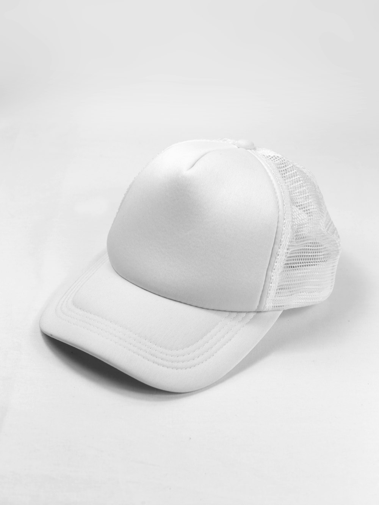

1. Histology of the Bovine Hide: The Corium and Epidermal Junction
To truly evaluate luxury leather, one must descend into the cellular architecture of animal dermis. A raw bovine hide is composed of distinct structural strata: the epidermis (the outermost thin protective layer removed during dehairing), the papillary dermis (the upper grain containing tightly intertwined, ultra-dense collagen fibers), the reticular corium (the thicker middle zone where collagen fibers become looser and woven horizontally), and the flesh layer (subcutaneous fat and tissue).
The structural integrity and tensile resilience of leather reside almost entirely in the uppermost 0.5 to 1.0 millimeter of the papillary layer—the unbroken natural grain. In this zone, collagen fibers are packed with microscopic density, oriented vertically and cross-linked into an impenetrable biological weave. When a hide retains this pristine upper layer entirely intact, it is classified as Full-Grain Leather.
This collagen matrix acts like a natural Kevlar mesh. The fibers are woven at microscopic intervals under biological tension, providing natural elasticity, tear resistance, and puncture protection. If this upper grain is preserved without chemical erosion or mechanical shaving, the leather can endure extreme temperature variations from sub-zero mountain freezes to arid desert heat without delaminating.
2. Decoding Commercial Jargon: 'Genuine', 'Top-Grain', and 'Full-Grain'
The global commercial marketplace frequently employs deliberately obfuscating terminology designed to mislead consumers into believing inferior materials represent premium quality:
- Full-Grain (The Apex Standard): The complete natural grain surface is preserved with zero buffing, shaving, or chemical correction. Every natural growth mark, neck wrinkle, and subtle pore variation remains visible. It represents less than 5% of global hide supplies because only pristine, unblemished animal hides qualify.
- Top-Grain (Corrected Grain): The outermost natural grain layer is sanded or shaved off to eliminate surface insect bites, barbwire scratches, or scars. To mimic leather texture, the sanded surface is stamped with an artificial heated embossing plate and sealed with a heavy polyurethane lacquer.
- Genuine Leather (Sub-Corium Split): A commercial marketing term for lower-tier split leather derived from the fibrous reticular layer remaining after the top grain has been split away. It lacks structural density and is heavily bonded with polymer adhesives.
- Bonded Leather: Ground leather fiber scraps shredded into dust, mixed with synthetic polyurethane binders, and rolled out like particleboard. It disintegrates within months of heavy use.
3. Full Tannery Grading & Durability Matrix
Comprehensive Leather Grading Matrix & Physical Properties
| Classification | Grain Layer Treatment | Breathability & Moisture Absorption | Patina Potential | Tensile Lifespan |
|---|---|---|---|---|
| Full-Grain Leather | 100% Unaltered Natural Grain; Zero Sanding | Maximum organic breathability; absorbs natural oils | Grows richer, deeper, and glossier over decades | 50 – 100+ Years |
| Top-Grain (Corrected) | Sanded/Buffed, Stamped with Artificial Plate | Near zero; sealed by synthetic polyurethane barrier | Zero true patina; polymer topcoat yellows and cracks | 5 – 12 Years |
| Split / Genuine | No natural grain; synthetic textured film applied | Zero breathability; prone to delamination | None; surface peels away under friction | 2 – 5 Years |
| Bonded Leather | Macerated scrap fibers reconstituted with resin | Zero breathability | None; flakes and disintegrates | 6 – 18 Months |
4. The Sanding Process: How Corrected Leather Loses Its Soul
When a commercial tannery sands a hide to create 'top-grain' leather, they shear off the dense collagen apex. In doing so, they eliminate the natural micropores that allow leather to breathe, adapt to ambient humidity, and absorb conditioning waxes.

To conceal this structural amputation, industrial producers spray an opaque plasticized pigment across the sanded hide. This creates a uniform, plastic-like texture that feels cold to the touch and smells of petrochemical solvents rather than rich bark tannins and natural oils. Over time, flexing causes the plastic film to fracture, revealing the chalky, brittle corium beneath.
5. The Physics and Organic Chemistry of True Patina Evolution
Patina is not dirt or wear; it is a complex photo-chemical and biological oxidation process unique to virgin full-grain vegetable-tanned hides. When you carry a full-grain satchel, four distinct environmental catalysts interact with the hide:
- Ultraviolet Photo-Oxidation: Natural sunlight oxidizes the vegetable polyphenols (tannins) extracted from chestnut and oak bark, gradually darkening pale mineral ivory and tan shades into deep amber, caramel, and mahogany hues.
- Lipid Absorption: Natural microscopic organic oils from the owner's hands migrate into the open pore structure, nourishing the collagen fibrils and creating a soft, buttery tactile finish.
- Mechanical Burnishing: Gentle everyday friction from clothing and movement smooths the microscopic peaks of the natural grain, polishing the surface into a deep, three-dimensional translucent sheen.
- Memory of Form: Unlike rigid plasticized hides, full-grain leather molds organically to the contours of your daily carry items, forming gentle, elegant ripples that reflect your personal journey.
6. IvorySatchelRidge Hide Selection Protocol: Only Top 3% Yields
At IvorySatchelRidge, we maintain direct partnerships with historic family tanneries in the French Alps and the Santa Croce sull'Arno region of Tuscany. We reject 97 out of every 100 inspected hides. Only skins from cattle raised in lush, alpine pastures with zero barbed wire fencing and humane husbandry practices possess the flawless grain density required for our master bench.
During our grading protocol, each hide is examined under calibrated 5,500K daylight simulation lamps to verify uniform corium thickness, absence of hidden scars, and optimal botanical fat-emulsion balance. Only hides achieving Grade 1 Certification receive our atelier's blind provenance stamp.
7. The Collector's Tactile & Optical Verification Guide
How can a discerning collector verify authentic full-grain leather without laboratory equipment? Observe these four hallmark tests:
- The Temperature Test: Natural full-grain leather instantly absorbs body warmth when you press your palm against it. Synthetic coatings and sanded top-grains feel unnaturally cold and plasticky.
- The Water Droplet Test: A single drop of distilled water placed on untreated full-grain leather will slowly darken the spot within 60 seconds as the open pore structure absorbs moisture before evaporating cleanly. On plastic-sealed top-grain, the droplet beads indefinitely on the synthetic film.
- The Grain Topography Exam: Look closely under magnification. Natural full-grain displays irregular, organic pore spacing and unique micro-wrinkles. Machine-embossed top grain repeats identical stamped patterns every few inches.
- The Aromatic Olfactory Test: Full-grain veg-tan leather possesses a sweet, earthy, woody scent derived from chestnut and mimosa tannins. Corrected hides emit sharp chemical or petroleum odors.
8. Hide Science FAQ & Tannery Insights
Uncoated full-grain leather can register superficial fingernail marks, but unlike plastic-coated leather where scratches permanently tear the polymer film, surface marks on vegetable-tanned full-grain leather easily buff out with gentle thumb friction and natural warmth, blending into the rich evolving patina.
Because full-grain leather retains the entire dense collagen structure of the papillary dermis without thinning or splitting, it possesses substantially higher mass density (approx. 0.95 to 1.05 g/cm³) compared to sanded or split leathers.
9. Biochemical Breakdown of Collagen Cross-Linking in Uncorrected Hides
At the molecular scale, collagen is a biopolymer consisting of amino acid chains—primarily glycine, proline, and hydroxyproline—coiled into tight triple helices known as tropocollagen. These helices assemble into microfibrils, which in turn group into dense fibril bundles ranging from 10 to 100 nanometers in diameter.
In pristine full-grain leather, the inter-fibrillar spacing in the papillary zone is stabilized by covalent lysyl-oxidase bonds formed during the animal's life. When vegetable tannins diffuse into these spaces during our 60-day pit immersion cycle, the large polyphenolic molecules form extensive multi-point hydrogen bonding networks with the peptide carbonyl groups of the collagen backbone. This cross-linking matrix prevents enzymatic hydrolysis by bacteria while maintaining structural flexibility.
When commercial tanneries shave or sand this layer to produce corrected 'top-grain' leather, they sever these dense microfibrillar networks. Without the tight papillary roof, the remaining reticular corium lacks lateral tensile stability, forcing industrial processors to coat the hide in thick layers of synthetic acrylic resin and polyurethane lacquers to prevent the fibers from pulling apart under tension.
10. Historical Provenance: From Equestrian Saddles to Bespoke Satchels
The preference for uncorrected full-grain leather is rooted in centuries of European equestrian harness making. In 18th-century France and England, cavalry officers and royal couriers relied upon uncorrected vegetable-tanned hides for stirrup leathers, bridles, and cartridge boxes. In high-stress equestrian applications, a sanded hide would snap catastrophically under sudden shock loads.
IvorySatchelRidge inherits this unyielding equestrian standard. We treat each satchel panel not as decorative fabric, but as a load-bearing architectural membrane engineered to withstand decades of daily commuting, transatlantic flights, and changing climatic conditions without ever tearing or losing its sculpted silhouette.
Feel the Organic Texture of Uncorrected Full-Grain Leather
Explore our bespoke portfolio and request an artisanal hide sample kit delivered to your private residence.